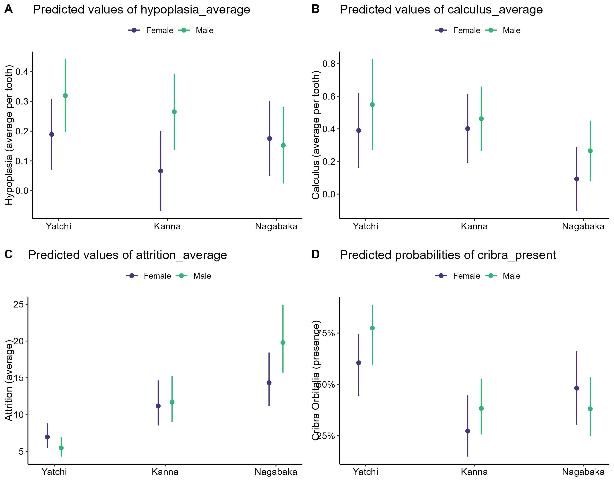

Resilience and Health in Colonial Ryukyu Islands
Bioarchaeological analysis of skeletal health markers across early modern Okinawa
Executive Summary
Problem: Japanese colonial control over the Ryukyu Islands (1609–1879) is well documented historically, but the biological costs of colonialism – and whether those costs were distributed uniformly across geography and sex – remain poorly understood. Skeletal remains offer a window into lived experience that written records cannot provide, particularly for peripheral and rural communities whose voices are absent from colonial archives.
Approach: Skeletal health markers were recorded for individuals from three burial sites spanning the colonial period (17th–19th centuries): Yatchi-no-Gama, a port city on a major trade route; Kanna Weenu Atai, a remote northern cave site; and Paimmi-nu-Nagabaka on the distant Miyako Island. Generalized Linear Models (GLM) with site, sex, and their interaction as predictors were fit separately for four health markers – enamel hypoplasia, dental calculus, dental attrition, and cribra orbitalia – using family distributions appropriate to each outcome.
Insights: Health outcomes diverged sharply by distance from colonial centers. The port city Yatchi showed the highest prevalence of cribra orbitalia (iron deficiency anemia) despite its economic activity, consistent with a pattern of resource extraction without local benefit. Remote sites showed elevated dental attrition reflecting coarser diets, but lower anemia – suggesting retained food security through traditional subsistence. A significant sex-by-site interaction at Nagabaka points to gender-differentiated taxation (grain tax for men, cloth tax for women) as a driver of divergent health profiles within the same community.
Significance: These findings complicate narratives of colonial impact as uniformly negative and geographically homogeneous. Peripheral distance could function as a form of protection when it allowed communities to retain cultural autonomy and traditional subsistence systems. The Ryukyu case contributes to comparative bioarchaeological frameworks for understanding how colonial power gradients shape health across space and sex.
Key Findings
- Remote sites (Nagabaka, Kanna) showed 1.6–2x higher dental attrition than Yatchi, consistent with coarser diets and limited access to trade goods
- Cribra orbitalia prevalence was highest at the port city Yatchi and lowest at Kanna – a geographic reversal of the expected poverty-anemia relationship
- A significant sex-by-site interaction at Nagabaka (p = 0.022) suggests gender-differentiated colonial labor demands created distinct health profiles for men and women at the same site
- Enamel hypoplasia showed no significant differences across sites or sexes, indicating uniform early-life stress regardless of location or colonial proximity
Manuscript in preparation. Collaborators: Mark J. Hudson (Max Planck Institute for Evolutionary Anthropology) and Mauricio Hernandez (University of Florida). Repository: github.com/kchoover14/peripheral-resilience-ryukyu-colonialism.
Research Questions
- Did health decline after Satsuma domain assumed colonial control in 1609?
- Were there geographic differences in health outcomes across the islands?
- Did men and women experience different health outcomes under colonialism?
- Can health differences be linked to sociopolitical autonomy and resilience at peripheral sites?
Research Answers
Dental Attrition
Dental attrition reflects diet coarseness and wear from food preparation methods. Remote sites showed substantially higher attrition than the port city, consistent with reliance on unprocessed subsistence foods rather than traded goods. Nagabaka individuals showed approximately twice the attrition of Yatchi (p < 0.001), and Kanna showed 1.6x higher attrition (p = 0.010). Males at Nagabaka showed an additional elevation above females at the same site (p = 0.022), a pattern consistent with the Ryukyuan grain tax system in which men performed agricultural labor while women paid cloth tax through weaving – different physical demands producing different oral wear profiles.
Dental Calculus
Dental calculus accumulation reflects dietary carbohydrate load. Nagabaka showed the lowest calculus levels, approaching significance (p = 0.055). Women consistently showed lower calculus than men across all three sites, a pattern that may reflect sex-differentiated diet or the differing physical demands of weaving versus agricultural labor reducing carbohydrate consumption relative to field work.
Cribra Orbitalia
Cribra orbitalia is a skeletal marker of iron deficiency anemia, typically associated with poor diet, infectious disease load, or both. The port city Yatchi showed the highest prevalence; Kanna was significantly lower (p = 0.006). This geographic reversal – higher anemia at the economically active site – is consistent with a “goods everywhere but none for locals” scenario in which trade activity extracted resources from port communities without improving resident health. Remote communities retaining traditional subsistence may have maintained better nutritional status despite lower access to trade goods.
Enamel Hypoplasia
Enamel hypoplasia records disruptions to tooth formation during childhood, serving as a marker of early-life physiological stress. No significant differences were detected across sites or sexes. This finding suggests that early-life stress was broadly similar regardless of location or proximity to colonial centers – the divergence in adult health markers emerged later, shaped by adult labor demands and resource access rather than childhood conditions.
Marginal Effects
The marginal effects plots display GLM predicted values with 95% confidence intervals for each health marker by site and sex. The significant site differences in attrition (Figure 1C) and cribra orbitalia (Figure 1D) are clearly visible, as is the consistent sex-based pattern in calculus (Figure 1B) where women showed lower values across all sites. The absence of patterning in hypoplasia (Figure 1A) confirms the uniform early-life stress finding.
Figure 1. Predicted values (marginal effects) from GLM models by site and sex. (A) Enamel hypoplasia. (B) Dental calculus. (C) Dental attrition. (D) Cribra orbitalia.

Interpretation: The four panels together reveal that colonial health impacts were neither uniform across geography nor across sex. Anemia – the marker most directly linked to systemic health burden – concentrated at the port city. Wear markers concentrated at remote sites, reflecting labor demands rather than systemic deprivation. The sex-by-site interaction at Nagabaka (Figure 1C) is the most analytically distinctive finding, pointing to gender-differentiated colonial extraction as a mechanism producing divergent health profiles within the same community.
Model Results
The table below reports GLM coefficients for all four models. Yatchi is the reference site; Female is the reference sex. Estimates for the Attrition model are on the log scale (Gamma family with log link); all others are on the response scale (Gaussian and Binomial families).
Table 1. GLM model coefficients for four skeletal health markers.
| Model | Term | Estimate | SE | p-value | 95% CI Low | 95% CI High |
|---|---|---|---|---|---|---|
| Hypoplasia | (Intercept) | 0.075 | 0.010 | < 0.001 | 0.055 | 0.095 |
| Hypoplasia | siteKanna | -0.003 | 0.014 | 0.832 | -0.031 | 0.025 |
| Hypoplasia | siteNagabaka | 0.009 | 0.013 | 0.494 | -0.016 | 0.034 |
| Hypoplasia | sexM | 0.007 | 0.014 | 0.630 | -0.022 | 0.036 |
| Hypoplasia | siteKanna:sexM | -0.005 | 0.020 | 0.797 | -0.044 | 0.034 |
| Hypoplasia | siteNagabaka:sexM | 0.012 | 0.019 | 0.524 | -0.025 | 0.049 |
| Calculus | (Intercept) | 0.612 | 0.059 | < 0.001 | 0.496 | 0.728 |
| Calculus | siteKanna | -0.076 | 0.083 | 0.363 | -0.239 | 0.087 |
| Calculus | siteNagabaka | -0.133 | 0.072 | 0.067 | -0.275 | 0.009 |
| Calculus | sexM | 0.138 | 0.083 | 0.098 | -0.025 | 0.301 |
| Calculus | siteKanna:sexM | 0.043 | 0.117 | 0.714 | -0.186 | 0.272 |
| Calculus | siteNagabaka:sexM | 0.043 | 0.103 | 0.674 | -0.159 | 0.245 |
| Attrition (Gamma) | (Intercept) | -1.397 | 0.073 | < 0.001 | -1.540 | -1.254 |
| Attrition (Gamma) | siteKanna | 0.470 | 0.101 | < 0.001 | 0.272 | 0.668 |
| Attrition (Gamma) | siteNagabaka | 0.685 | 0.096 | < 0.001 | 0.497 | 0.873 |
| Attrition (Gamma) | sexM | 0.141 | 0.103 | 0.172 | -0.061 | 0.343 |
| Attrition (Gamma) | siteKanna:sexM | -0.038 | 0.143 | 0.791 | -0.318 | 0.242 |
| Attrition (Gamma) | siteNagabaka:sexM | 0.299 | 0.130 | 0.022 | 0.044 | 0.554 |
| Cribra Orbitalia | (Intercept) | 0.511 | 0.284 | 0.072 | -0.045 | 1.068 |
| Cribra Orbitalia | siteKanna | -1.099 | 0.401 | 0.006 | -1.885 | -0.313 |
| Cribra Orbitalia | siteNagabaka | -0.549 | 0.362 | 0.129 | -1.258 | 0.160 |
| Cribra Orbitalia | sexM | -0.511 | 0.402 | 0.203 | -1.299 | 0.277 |
| Cribra Orbitalia | siteKanna:sexM | 0.511 | 0.566 | 0.367 | -0.599 | 1.621 |
| Cribra Orbitalia | siteNagabaka:sexM | 0.654 | 0.511 | 0.200 | -0.348 | 1.656 |
Interpretation: The attrition model shows the strongest and most consistent site effects, with both Kanna and Nagabaka significantly elevated above Yatchi. The Nagabaka:sexM interaction term is the only significant interaction across all four models, confirming that sex-differentiated health patterning is specific to the most remote site. Cribra orbitalia shows Kanna significantly lower than Yatchi with no significant interactions, consistent with a site-level rather than sex-differentiated anemia effect.
Study Design
Model results reported here are from the analysis scripts in the repository. The manuscript is in preparation; final model specifications and reported values may differ following peer review. The table above is hard-coded from script output and will be updated when the manuscript is finalized.
Data Source: Skeletal remains from three burial sites in the Ryukyu Islands (modern Okinawa), spanning the 17th–19th centuries. Dental data were recorded for 136 individuals; cribra orbitalia data for 253 individuals. Raw data are in Excel format in the repository. Data were collected by the authors; these are not publicly archived data.
Data Handling: Data were imported from Excel with non-standard missing value codes (ns, ?, F?, M?) treated as NA. Site labels were added to each sheet before merging. Dental health variables (hypoplasia, calculus, attrition) were computed as per-tooth averages by dividing totals by tooth count. Cribra orbitalia severity scores were converted to binary presence/absence for the binomial model, as severity levels are not proportionally scaled. Column names were standardized using janitor::clean_names().
Analytical Approach:
- Descriptive statistics computed by site and sex for all health markers using
skimr; exported to CSV - Distribution assessed via QQ plots pooled and by site and sex; Gamma family selected for attrition due to right skew; Gaussian for hypoplasia and calculus; Binomial for cribra orbitalia
- GLM models fit with site, sex, and site×sex interaction as predictors; Yatchi as reference site, Female as reference sex
- Attrition model initially fit with Gaussian family; overdispersion detected; refitted with Gamma(link = “log”) which produced better AIC
- Marginal effects (predicted values with 95% CI) extracted using
ggeffects::ggpredict()and plotted as a four-panel figure usingcowplot::plot_grid() - Model coefficients and confidence intervals exported to CSV using
broom::tidy()
Project Resources
Repository: github.com/kchoover14/peripheral-resilience-ryukyu-colonialism
Data:
data-ryukyu-raw-dental-kch.xlsx– raw dental data, three sheets (Kanna, Nagabaka, Yatchi); collected by authorsdata-ryukyu-raw-co-kch.xlsx– raw cribra orbitalia data, three sheets; collected by authorsdata-ryukyu-dental.csv– cleaned and merged dental dataset; output of script1data-ryukyu-CO.csv– cleaned and merged cribra orbitalia dataset; output of script1
Code:
script1-cleaning.R– import from Excel, site labels, per-tooth averages, export cleaned CSVsscript2-exploration.R– descriptive statistics, distribution checks, QQ plotsscript3-analysis.R– GLM models, model diagnostics, marginal effects figure, coefficient export
Project Artifacts:
results-glm-coefficients.csv– tidy model coefficients for all four GLMsdescriptives.csv– descriptive statistics for dental markers by site and sexdescriptivesCO.csv– descriptive statistics for cribra orbitalia by site and sex- Figures (n=1):
plot-marginal-effects.png - Supplemental figures (n=4):
plot-distribution dental pooled.png,plot-distribution dental by site and sex.png,plot-distribution co.png,plot-diagnostics-all-models.png
Environment:
renv.lockandrenv/– restore withrenv::restore()
License:
- Code and scripts © Kara C. Hoover, licensed under the MIT License.
- Data, figures, and written content © Kara C. Hoover, licensed under CC BY-NC-ND 4.0.
Tools & Technologies
Languages: R
Packages: readxl | dplyr | janitor | tidyr | ggplot2 | skimr | ggeffects | cowplot | broom
Expertise
Domain Expertise: bioarchaeology | skeletal health markers | colonial health impacts | GLM modeling | Okinawa prehistory and history
Transferable Expertise: Applies quantitative modeling to human skeletal data to answer questions about historical inequality and resilience – demonstrating the ability to extract population-level evidence from fragmentary biological records and translate findings about biological variation into interpretable evidence about social and political processes.